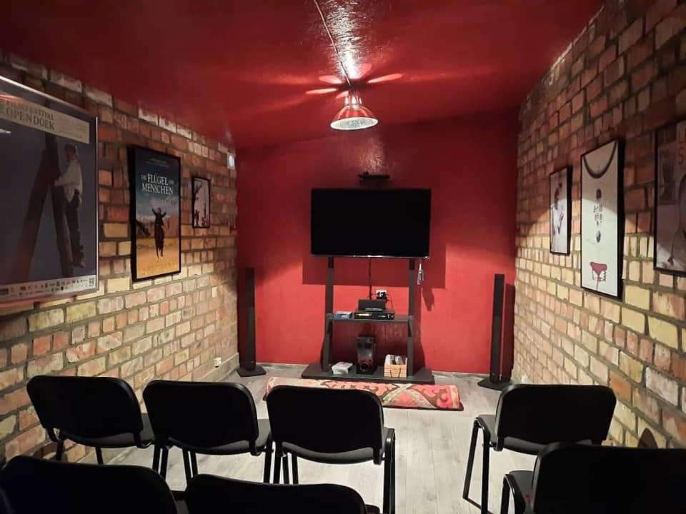

{% extends 'main/base.html' %}
{% block title %}
about
{% endblock %}
{% block content %}

Кинотеатр
"Идея превратить гараж в кинотеатр не сразу воплотилась. Изначально планировали в саду построить выставочное пространство с кинозалом. Но мне почему-то по душе был гараж: готовое сооружение в полтора кирпича, с расшитой кладкой снаружи и внутри, единственный, как нам тогда казалось, недостаток - это его размеры. И все же, после тщательных замеров поняли, что может получиться. Задумка со стройкой требовала немалых средств, в итоге, разумное решение: место для автомобиля превратилось в кинотеатр "Гараж" на 15 мест. До пандемии он успешно функционировал, все, кто приходили к нам, были в восторге. Там показывали не только фильмы и проводили обсуждения, но оказалось уютным местом для бесед и мастер-классов.
"Гараж", как и положено, оформили афишами наших фильмов, которые имели дистрибьюцию в других странах: Франции, Германии, Японии... (не все афиши, а лишь те, что были доступны). Кстати, японцы на свой лад переименовали все наши фильмы, которые выходили у них на экран. Это объясняли тем, что их зрители имеют свою специфику восприятия. "Бешкемпир" - "Прокатиться бы с девушкой на велосипеде", "Маймыл" - "Прощанье под долгий паровозный гудок", "Кентавр" - "Отпустить коня на волю" (авторский перевод).
А вот бельгийский постер, с изображением Свет аке на столбе, я привёз из Тюрнхаута, где 19й Кинофестиваль "Open Doek" использовал кадр из фильма, как афишу всего мероприятия. Меня же пригласили представить "Свет аке" на открытии или закрытии, уже не помню, вообщем, я прилетел в Брюссель. Когда стал проходить паспортный контроль, проверяющий стал о чём-то спрашивать, я кроме кыргызкого и русского, других языков не знаю. Все, что у меня было - это приглашение, но он все равно попросил меня пройти с ним в отделение, там сидели несколько человек в форме и кушали. Вдруг, тот который меня задержал, сидя за компьютером стал голосить: "Superstar, Superstar..." И все стали подходить к нему, потом начали разглядывать меня. Оказывается, по имеющемуся адресу сайта на приглашении, в компьютере сразу появился Свет аке, то есть я. "Виноватый" в знак уважения, как бы с почестями проводил меня до встречающих. Он, видимо, стал им рассказывать то, что произошло, они все смеялись и представители фестиваля через переводчика мне сказали: "Мы приготовили для Вас ещё один сюрприз..."
От Брюсселя до Тюрнхаута добирались на машине, а когда заехали в город, где проходил фестиваль, меня попросили, чтобы обратил внимание на столбы. И вдруг я увидел Свет аке, как живой монтер красовался на столбе. Его фотографию в полный рост вырезали по контуру фигуры и им обклеели жёсткую основу типа картона, причём с двух сторон и прикрепили к столбу. Свет аке выглядел, как настоящий. Таким образом, была декорирована целая улица, с собой был телефон с фотоаппаратом и я снял, но когда он сломался, все имеющиеся в нем данные не сохранились.
Мы, киношники, любим сочинять разные байки и как бы в подтверждение своих слов, я попросил Алтынай связаться с организаторами и, если у них сохранились фотографии со Свет аке на столбе, пусть нам отправят. Они прислали, правда, то, что у них было.
Когда я рассказываю эту историю, многие просят вырезать так же Свет аке и прикрепить его на столб возле дома, как указатель "Арт резиденции".
{% endblock %}